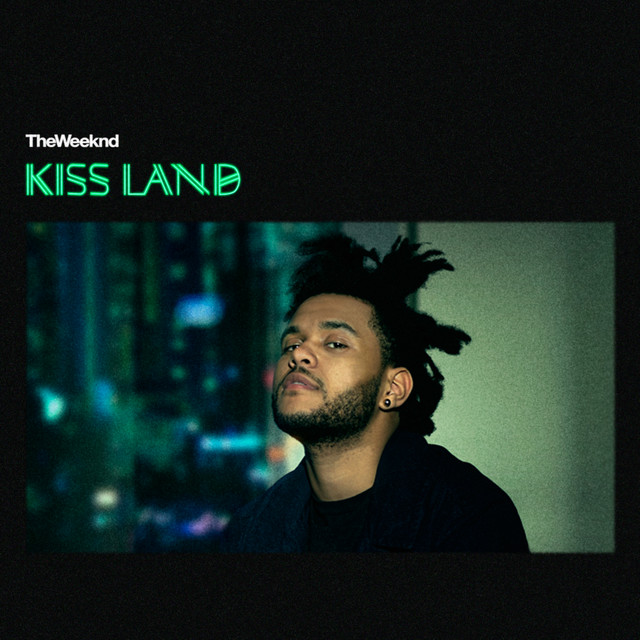
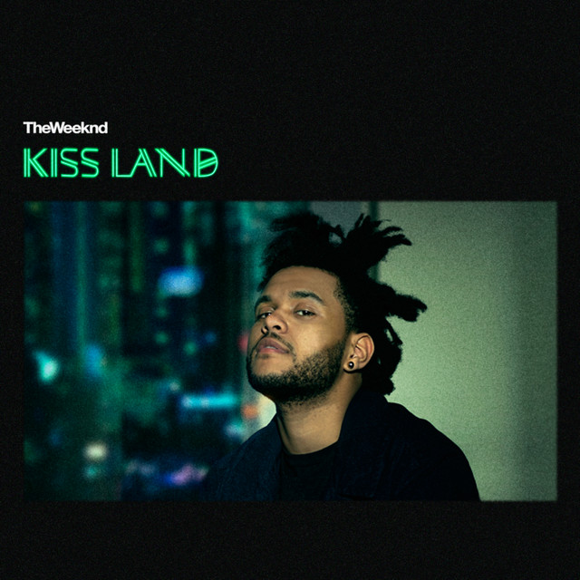
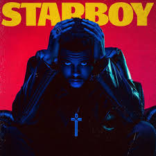
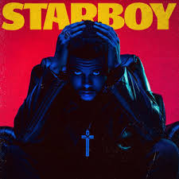
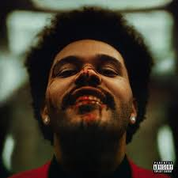
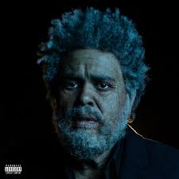
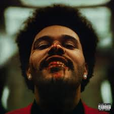
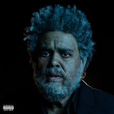

| # | Song | Album | Track | Duration | Streams |
|---|
Correct!
Come back tomorrow!
Number of plays: 0
Win %: 0%
Current streak: 0
Max streak: 0
| # | Song | Album | Track | Duration | Streams |
|---|
Come back tomorrow!
Number of plays: 0
Win %: 0%
Current streak: 0
Max streak: 0
Come back tomorrow!
Goal: Guess the correct Weeknd song in 8 guesses or less.
 

 

 




Weekndle is a fan-made, Wordle-inspired game where players guess a song by The Weeknd in 8 tries or less.
The project was created out of passion for music, games, and The Weeknd’s artistry. It is not affiliated with The Weeknd, his label, or Yeezle, but was inspired by their work.
Each day, players get one new puzzle. Stats are tracked locally on your device so you can keep up with your streaks.
Weekndle respects your privacy. This game is a simple browser-based experience and does not collect personal data directly.
Your game statistics (streaks, wins, losses) are stored locally on your device using your browser’s local storage. This data never leaves your device.
If advertising (e.g., Google AdSense) is added in the future, those services may use cookies or similar technologies to serve relevant ads. You can control or disable cookies in your browser settings.